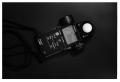

哈斯2014-06-21 21:554.31 分
操作性 4.50功能性 4.50美观性 4.50趣味性 5.00耐用性 4.50性价比 3.00解像力 4.00色彩还原 4.50
lchq2006-10-06 22:554.38 分
操作性 4.50功能性 5.00美观性 4.00趣味性 4.50耐用性 4.50性价比 3.50解像力 4.50色彩还原 4.50

lchq2006-02-14 01:43
子非鱼2005-07-11 04:324.31 分
操作性 4.50功能性 4.50美观性 4.50趣味性 4.50耐用性 4.50性价比 4.50解像力 4.50色彩还原 3.00
winnersoft2003-07-31 04:443.25 分
操作性 5.00功能性 4.00美观性 3.50趣味性 4.00耐用性 4.50性价比 1.00解像力 3.50色彩还原 0.50
omo1232003-04-04 19:444.63 分
操作性 5.00功能性 5.00美观性 4.50趣味性 4.50耐用性 5.00性价比 3.00解像力 5.00色彩还原 5.00
高尔夫2002-12-30 17:434.31 分
操作性 4.50功能性 4.50美观性 5.00趣味性 4.50耐用性 4.50性价比 3.50解像力 4.00色彩还原 4.00
曾阿牛2002-11-02 11:433.31 分
操作性 4.00功能性 4.00美观性 3.00趣味性 2.00耐用性 4.00性价比 3.00解像力 4.00色彩还原 2.50
sunyue2002-10-31 16:294.44 分
操作性 5.00功能性 5.00美观性 4.50趣味性 4.00耐用性 4.50性价比 4.00解像力 5.00色彩还原 3.50